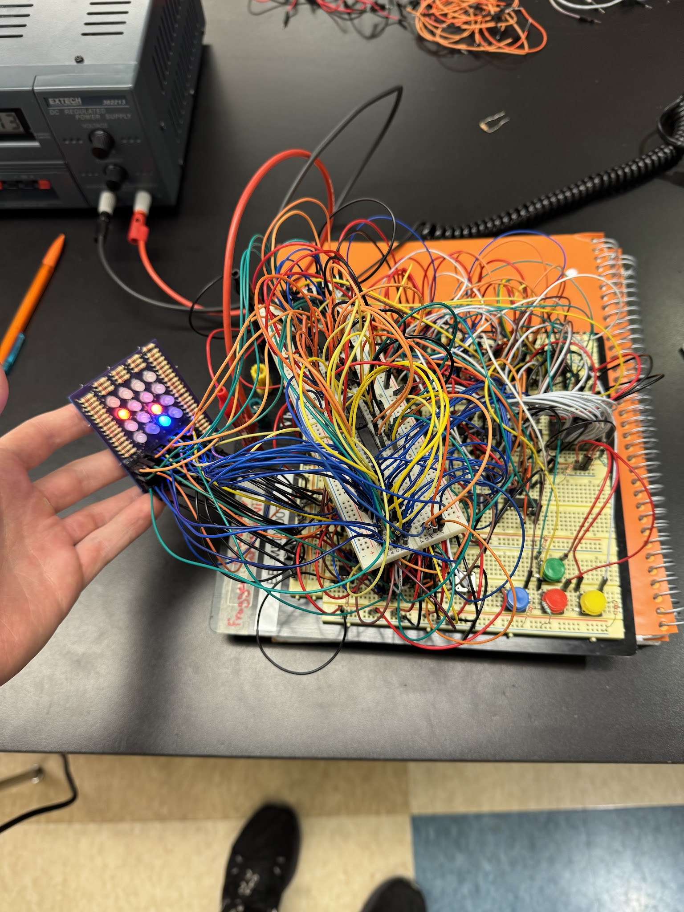
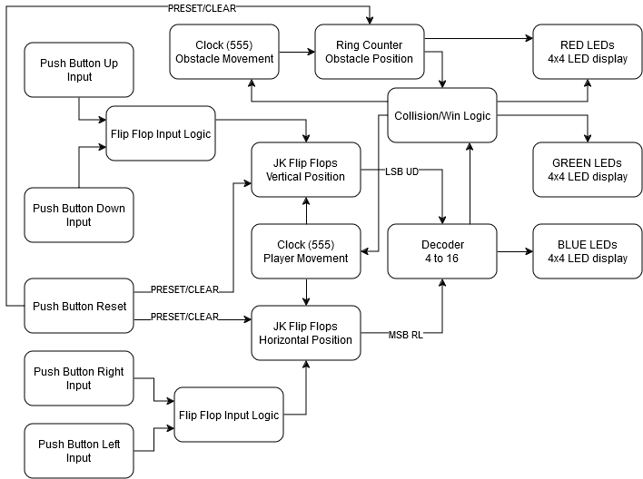
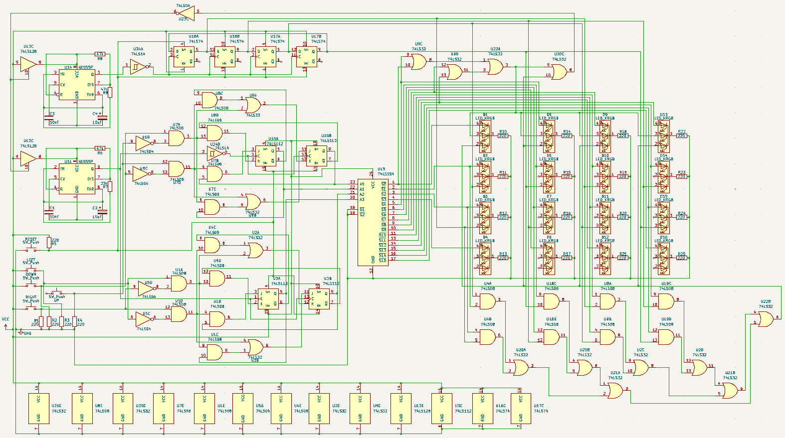

02 / Digital systems integration / Built & demonstrated
Team project · Maxwell Lutter & Carlos Selvi
The Other Side: discrete-logic LED game
With Carlos Selvi, I took an obstacle-avoidance game from gameplay rules and logic simulation to a working breadboard. The challenge was to make movement, timing, display polarity, and game termination behave as one system using discrete logic and a 4 × 4 RGB LED display.
- Team & contribution
- Co-authored with Carlos Selvi; digital-logic game design and implementation
- Tools
- Finite state machines · 555 timers · Logisim · Breadboarding
- Outcome
- Physical game with bounded movement, win/loss freeze, and reset

Goal: implement the rules in hardware
The player moves a blue LED across a 4 × 4 display while red obstacles cross its path. Reaching the top row must register a win; occupying an obstacle position must register a loss. Both events must hold the final display until reset.
These rules became separate input, state, timing, display, and termination subsystems. Two two-bit state machines track horizontal and vertical position; a decoder maps the four position bits to an LED. Obstacle counters feed the same logical space so combinational logic can detect a collision.


Design decisions at the subsystem interfaces
A shift-register approach could move the player beyond the display. We replaced it with bounded state machines whose transitions hold position at an edge. Updating the two axes independently also permits diagonal movement without adding a separate diagonal state.
Sampling directional buttons on a 555 clock’s rising edge limits movement speed. Separate player and obstacle clocks allow different rates, but clocked input has a usability cost: a short button press between edges can be missed. The presentation identifies this as a limitation of the implemented control scheme.
The simulated logic also had to match the physical display. Active-low decoder outputs needed inversion to drive the RGB LED board. Collision and win logic then controlled the timers’ supply path through a tri-state buffer so termination would freeze the displayed state.
Build up from a model to the breadboard
An early gameplay prototype established the intended behavior and useful clock speeds. Logisim let us check the complete logic with simplified clocks and displays, while CircuitVerse and Tinkercad supported individual circuit experiments.
The breadboard then required the logical interfaces to work electrically: button inputs, state outputs, display decoding, and timer control had to agree. The final presentation records the schematic, state assignments, transition logic, and physical game. Maxwell Lutter and Carlos Selvi share credit; the deck does not divide ownership of individual subsystems.
Outcome and engineering evidence
A built game with directional and diagonal movement, boundary handling, win/loss indication, freeze, and reset.
The team reported completing the core behavior in physical hardware. An independently timed second obstacle row and adjustable difficulty remained proposed extensions; those features were not part of the documented final build.
This project provides concrete evidence of translating behavior into state transitions, designing timing and logic interfaces, and carrying a simulated design through physical integration. The clocked-button limitation also shows where the working circuit could improve as a user interface.
Inside the project

